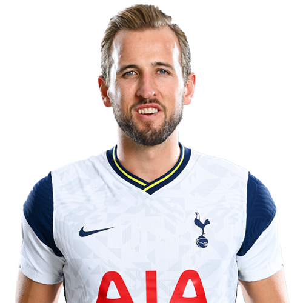

As biased as this choice may be, Sonny has got to be my favorite
player on the Spurs. A left-winger from South Korea, Son has been an
integral part of the team since his arrival. He's netted some of the
most crucial goals in the recent seasons, and even won the Goal of the
Season in the 2019/20 campaign. He is now a globally recognized star
and one of the best in his position in the world. As a fellow South
Korean, I am very proud that he is able to put our small country on
the map in a European-dominated sport.
Harry Kane

Harry Kane is a straight fan favorite. He is the captain of not only
this Tottenham side, but even for his nation, England. Kane is one of
the deadliest strikers in the world, and is on his way to break the
EPL all-time goal scoring record that is currently held by Alan
Shearer. When I see Kane's name on the team sheet, I know it's going
to be a tough day for the opponents and I love watching his tenacity
and leadership on the pitch. He is always ready to score or provide
for his teammates and is simply a joy to watch.
Toby Alderweireld
Toby Alderweireld, a center back from Belgium, is one of the longest
serving members of this Tottenham squad. Although a defender by
position, he boasts excellent technique on the ball and an expansive
passing range that could unlock opposition defences in one pass. Not
to mention, Toby is always willing to put his body on the line to make
that goal-saving tackle week-in week-out and it is admirable to see
his passion for the team.
Pierre-Emile Højbjerg
Pierre-Emile Højbjerg is a new signing this season. Initially, the
Danish midfielder wasn't met with great response from the fan-base,
but throughout this season he is proving every doubter wrong. If
anything, he could be the signing of the season throughout the whole
league. As a defensive midfielder, he puts in hard work to cover the
backline while also providing a beautiful passing game to support the
offense. In fact, he currently leads the team in tackles made and
passes made, showing his tremendous contribution to our success.